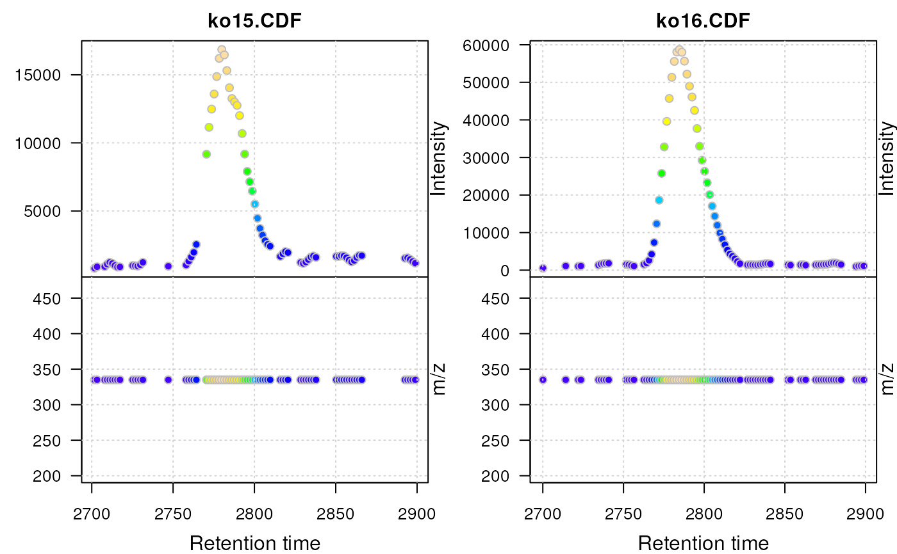

R/functions-utils.R
plotMsData.RdUPDATE: please use plot(x, type = "XIC") from the MSnbase package
instead. See examples below.
The plotMsData creates a plot that combines an (base peak )
extracted ion chromatogram on top (rt against intensity) and a plot of
rt against m/z values at the bottom.
plotMsData( x, main = "", cex = 1, mfrow = c(2, 1), grid.color = "lightgrey", colramp = colorRampPalette(rev(brewer.pal(9, "YlGnBu"))) )
| x |
|
|---|---|
| main |
|
| cex |
|
| mfrow |
|
| grid.color | a color definition for the grid line (or |
| colramp | a color ramp palette to be used to color the data points
based on their intensity. See argument |
## Read two files from the faahKO package library(faahKO) library(magrittr) cdfs <- dir(system.file("cdf", package = "faahKO"), full.names = TRUE, recursive = TRUE)[1:2] raw_data <- readMSData(cdfs, mode = "onDisk")#>## Subset the object to a rt and mz range and plot the data. raw_data %>% filterRt(rt = c(2700, 2900)) %>% filterMz(mz = c(334.9, 335.1)) %>% plot(type = "XIC")#> Warning: No data points between 334.9 and 335.1 for spectrum with acquisition #> number 128. Returning empty spectrum.#> Warning: No data points between 334.9 and 335.1 for spectrum with acquisition #> number 131. Returning empty spectrum.#> Warning: No data points between 334.9 and 335.1 for spectrum with acquisition #> number 132. Returning empty spectrum.#> Warning: No data points between 334.9 and 335.1 for spectrum with acquisition #> number 140. Returning empty spectrum.#> Warning: No data points between 334.9 and 335.1 for spectrum with acquisition #> number 141. Returning empty spectrum.#> Warning: No data points between 334.9 and 335.1 for spectrum with acquisition #> number 142. Returning empty spectrum.#> Warning: No data points between 334.9 and 335.1 for spectrum with acquisition #> number 143. Returning empty spectrum.#> Warning: No data points between 334.9 and 335.1 for spectrum with acquisition #> number 149. Returning empty spectrum.#> Warning: No data points between 334.9 and 335.1 for spectrum with acquisition #> number 150. Returning empty spectrum.#> Warning: No data points between 334.9 and 335.1 for spectrum with acquisition #> number 151. Returning empty spectrum.#> Warning: No data points between 334.9 and 335.1 for spectrum with acquisition #> number 152. Returning empty spectrum.#> Warning: No data points between 334.9 and 335.1 for spectrum with acquisition #> number 153. Returning empty spectrum.#> Warning: No data points between 334.9 and 335.1 for spectrum with acquisition #> number 154. Returning empty spectrum.#> Warning: No data points between 334.9 and 335.1 for spectrum with acquisition #> number 155. Returning empty spectrum.#> Warning: No data points between 334.9 and 335.1 for spectrum with acquisition #> number 156. Returning empty spectrum.#> Warning: No data points between 334.9 and 335.1 for spectrum with acquisition #> number 157. Returning empty spectrum.#> Warning: No data points between 334.9 and 335.1 for spectrum with acquisition #> number 159. Returning empty spectrum.#> Warning: No data points between 334.9 and 335.1 for spectrum with acquisition #> number 160. Returning empty spectrum.#> Warning: No data points between 334.9 and 335.1 for spectrum with acquisition #> number 161. Returning empty spectrum.#> Warning: No data points between 334.9 and 335.1 for spectrum with acquisition #> number 162. Returning empty spectrum.#> Warning: No data points between 334.9 and 335.1 for spectrum with acquisition #> number 163. Returning empty spectrum.#> Warning: No data points between 334.9 and 335.1 for spectrum with acquisition #> number 164. Returning empty spectrum.#> Warning: No data points between 334.9 and 335.1 for spectrum with acquisition #> number 170. Returning empty spectrum.#> Warning: No data points between 334.9 and 335.1 for spectrum with acquisition #> number 171. Returning empty spectrum.#> Warning: No data points between 334.9 and 335.1 for spectrum with acquisition #> number 172. Returning empty spectrum.#> Warning: No data points between 334.9 and 335.1 for spectrum with acquisition #> number 199. Returning empty spectrum.#> Warning: No data points between 334.9 and 335.1 for spectrum with acquisition #> number 200. Returning empty spectrum.#> Warning: No data points between 334.9 and 335.1 for spectrum with acquisition #> number 201. Returning empty spectrum.#> Warning: No data points between 334.9 and 335.1 for spectrum with acquisition #> number 206. Returning empty spectrum.#> Warning: No data points between 334.9 and 335.1 for spectrum with acquisition #> number 207. Returning empty spectrum.#> Warning: No data points between 334.9 and 335.1 for spectrum with acquisition #> number 208. Returning empty spectrum.#> Warning: No data points between 334.9 and 335.1 for spectrum with acquisition #> number 209. Returning empty spectrum.#> Warning: No data points between 334.9 and 335.1 for spectrum with acquisition #> number 217. Returning empty spectrum.#> Warning: No data points between 334.9 and 335.1 for spectrum with acquisition #> number 218. Returning empty spectrum.#> Warning: No data points between 334.9 and 335.1 for spectrum with acquisition #> number 219. Returning empty spectrum.#> Warning: No data points between 334.9 and 335.1 for spectrum with acquisition #> number 220. Returning empty spectrum.#> Warning: No data points between 334.9 and 335.1 for spectrum with acquisition #> number 221. Returning empty spectrum.#> Warning: No data points between 334.9 and 335.1 for spectrum with acquisition #> number 222. Returning empty spectrum.#> Warning: No data points between 334.9 and 335.1 for spectrum with acquisition #> number 223. Returning empty spectrum.#> Warning: No data points between 334.9 and 335.1 for spectrum with acquisition #> number 235. Returning empty spectrum.#> Warning: No data points between 334.9 and 335.1 for spectrum with acquisition #> number 236. Returning empty spectrum.#> Warning: No data points between 334.9 and 335.1 for spectrum with acquisition #> number 237. Returning empty spectrum.#> Warning: No data points between 334.9 and 335.1 for spectrum with acquisition #> number 238. Returning empty spectrum.#> Warning: No data points between 334.9 and 335.1 for spectrum with acquisition #> number 239. Returning empty spectrum.#> Warning: No data points between 334.9 and 335.1 for spectrum with acquisition #> number 240. Returning empty spectrum.#> Warning: No data points between 334.9 and 335.1 for spectrum with acquisition #> number 241. Returning empty spectrum.#> Warning: No data points between 334.9 and 335.1 for spectrum with acquisition #> number 242. Returning empty spectrum.#> Warning: No data points between 334.9 and 335.1 for spectrum with acquisition #> number 243. Returning empty spectrum.#> Warning: No data points between 334.9 and 335.1 for spectrum with acquisition #> number 244. Returning empty spectrum.#> Warning: No data points between 334.9 and 335.1 for spectrum with acquisition #> number 245. Returning empty spectrum.#> Warning: No data points between 334.9 and 335.1 for spectrum with acquisition #> number 246. Returning empty spectrum.#> Warning: No data points between 334.9 and 335.1 for spectrum with acquisition #> number 247. Returning empty spectrum.#> Warning: No data points between 334.9 and 335.1 for spectrum with acquisition #> number 248. Returning empty spectrum.#> Warning: No data points between 334.9 and 335.1 for spectrum with acquisition #> number 249. Returning empty spectrum.#> Warning: No data points between 334.9 and 335.1 for spectrum with acquisition #> number 250. Returning empty spectrum.#> Warning: No data points between 334.9 and 335.1 for spectrum with acquisition #> number 129. Returning empty spectrum.#> Warning: No data points between 334.9 and 335.1 for spectrum with acquisition #> number 130. Returning empty spectrum.#> Warning: No data points between 334.9 and 335.1 for spectrum with acquisition #> number 131. Returning empty spectrum.#> Warning: No data points between 334.9 and 335.1 for spectrum with acquisition #> number 132. Returning empty spectrum.#> Warning: No data points between 334.9 and 335.1 for spectrum with acquisition #> number 133. Returning empty spectrum.#> Warning: No data points between 334.9 and 335.1 for spectrum with acquisition #> number 134. Returning empty spectrum.#> Warning: No data points between 334.9 and 335.1 for spectrum with acquisition #> number 135. Returning empty spectrum.#> Warning: No data points between 334.9 and 335.1 for spectrum with acquisition #> number 136. Returning empty spectrum.#> Warning: No data points between 334.9 and 335.1 for spectrum with acquisition #> number 138. Returning empty spectrum.#> Warning: No data points between 334.9 and 335.1 for spectrum with acquisition #> number 139. Returning empty spectrum.#> Warning: No data points between 334.9 and 335.1 for spectrum with acquisition #> number 140. Returning empty spectrum.#> Warning: No data points between 334.9 and 335.1 for spectrum with acquisition #> number 141. Returning empty spectrum.#> Warning: No data points between 334.9 and 335.1 for spectrum with acquisition #> number 144. Returning empty spectrum.#> Warning: No data points between 334.9 and 335.1 for spectrum with acquisition #> number 145. Returning empty spectrum.#> Warning: No data points between 334.9 and 335.1 for spectrum with acquisition #> number 146. Returning empty spectrum.#> Warning: No data points between 334.9 and 335.1 for spectrum with acquisition #> number 147. Returning empty spectrum.#> Warning: No data points between 334.9 and 335.1 for spectrum with acquisition #> number 148. Returning empty spectrum.#> Warning: No data points between 334.9 and 335.1 for spectrum with acquisition #> number 149. Returning empty spectrum.#> Warning: No data points between 334.9 and 335.1 for spectrum with acquisition #> number 155. Returning empty spectrum.#> Warning: No data points between 334.9 and 335.1 for spectrum with acquisition #> number 156. Returning empty spectrum.#> Warning: No data points between 334.9 and 335.1 for spectrum with acquisition #> number 157. Returning empty spectrum.#> Warning: No data points between 334.9 and 335.1 for spectrum with acquisition #> number 158. Returning empty spectrum.#> Warning: No data points between 334.9 and 335.1 for spectrum with acquisition #> number 159. Returning empty spectrum.#> Warning: No data points between 334.9 and 335.1 for spectrum with acquisition #> number 160. Returning empty spectrum.#> Warning: No data points between 334.9 and 335.1 for spectrum with acquisition #> number 165. Returning empty spectrum.#> Warning: No data points between 334.9 and 335.1 for spectrum with acquisition #> number 166. Returning empty spectrum.#> Warning: No data points between 334.9 and 335.1 for spectrum with acquisition #> number 167. Returning empty spectrum.#> Warning: No data points between 334.9 and 335.1 for spectrum with acquisition #> number 207. Returning empty spectrum.#> Warning: No data points between 334.9 and 335.1 for spectrum with acquisition #> number 208. Returning empty spectrum.#> Warning: No data points between 334.9 and 335.1 for spectrum with acquisition #> number 219. Returning empty spectrum.#> Warning: No data points between 334.9 and 335.1 for spectrum with acquisition #> number 220. Returning empty spectrum.#> Warning: No data points between 334.9 and 335.1 for spectrum with acquisition #> number 221. Returning empty spectrum.#> Warning: No data points between 334.9 and 335.1 for spectrum with acquisition #> number 222. Returning empty spectrum.#> Warning: No data points between 334.9 and 335.1 for spectrum with acquisition #> number 223. Returning empty spectrum.#> Warning: No data points between 334.9 and 335.1 for spectrum with acquisition #> number 224. Returning empty spectrum.#> Warning: No data points between 334.9 and 335.1 for spectrum with acquisition #> number 227. Returning empty spectrum.#> Warning: No data points between 334.9 and 335.1 for spectrum with acquisition #> number 228. Returning empty spectrum.#> Warning: No data points between 334.9 and 335.1 for spectrum with acquisition #> number 229. Returning empty spectrum.#> Warning: No data points between 334.9 and 335.1 for spectrum with acquisition #> number 233. Returning empty spectrum.#> Warning: No data points between 334.9 and 335.1 for spectrum with acquisition #> number 234. Returning empty spectrum.#> Warning: No data points between 334.9 and 335.1 for spectrum with acquisition #> number 235. Returning empty spectrum.#> Warning: No data points between 334.9 and 335.1 for spectrum with acquisition #> number 247. Returning empty spectrum.#> Warning: No data points between 334.9 and 335.1 for spectrum with acquisition #> number 248. Returning empty spectrum.#> Warning: No data points between 334.9 and 335.1 for spectrum with acquisition #> number 249. Returning empty spectrum.#> Warning: No data points between 334.9 and 335.1 for spectrum with acquisition #> number 250. Returning empty spectrum.#> Warning: No data points between 334.9 and 335.1 for spectrum with acquisition #> number 251. Returning empty spectrum.